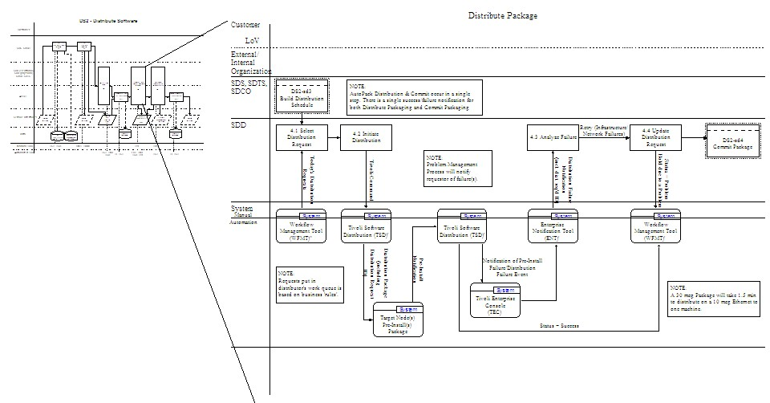

| Guideline: Developing IT Services Detailed Design |
 |
|
Relationships
| Related Elements |
|---|
Main Description
The production of the work product starts with an in depth review of the IT Service Design work product which is a main
input. Everybody on the team needs to understand the charts and documentation to be able to proceed with the detailed
design.
 High Level Design Detailed Design The next step after the high-level design review is to determine the detailed tasks required to perform a service with the specific tools selected and with the specific jobs defined. When identifying the specific tool for each task a final tool selection might be necessary. Sometimes tools provide similar functions and a decision has to be made which tool to use. Criteria for this decision are:
The following are sequential steps that can achieve the detailed workflow definition, but definition will likely be an iterative process.
|
| © Copyright IBM Corp. 1987, 2012 All Rights Reserved Property of IBM These materials are intended only for use as part of an IBM engagement |